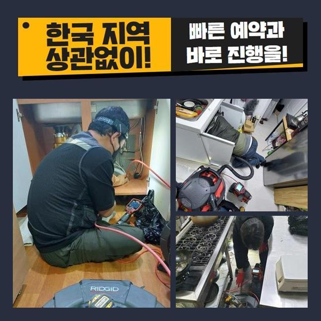
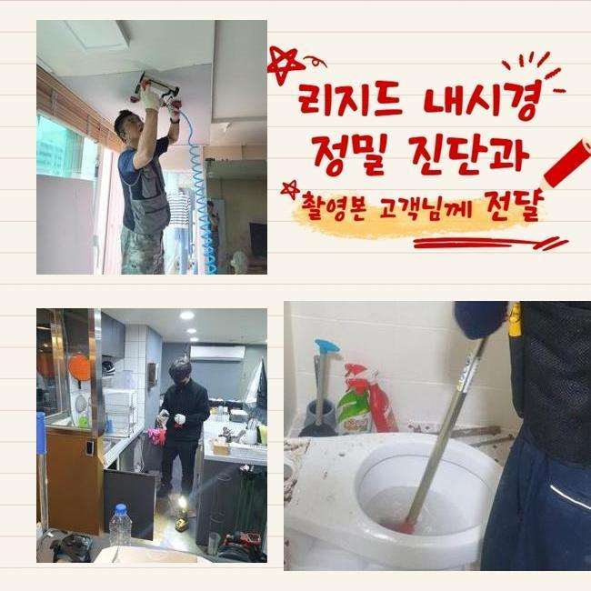
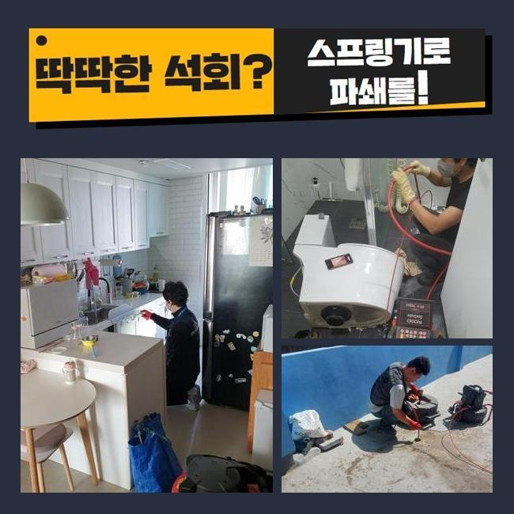
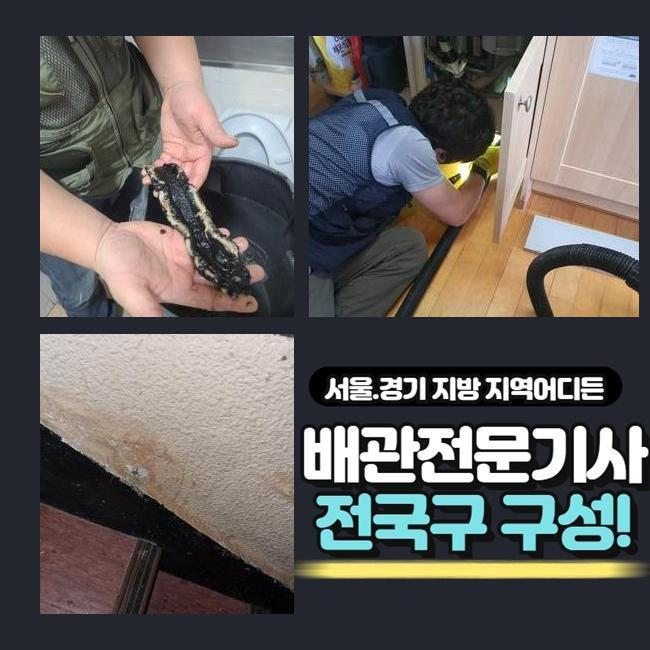
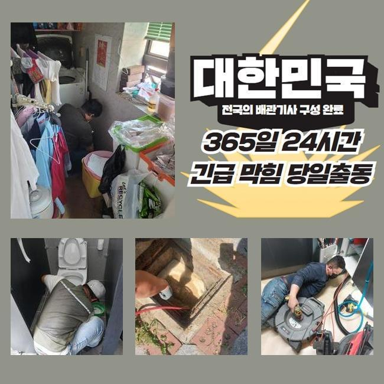
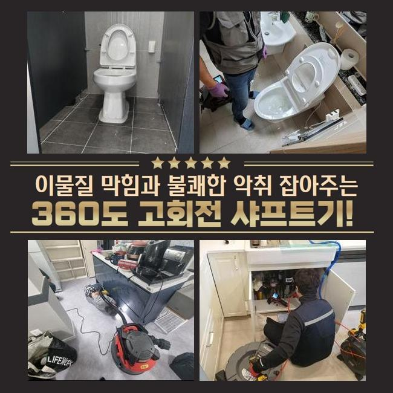

🏠 일산 중산동변기뚫음 사리현동 하수구청소 수리업체
용인 싱크대막힘 전문 시공 후기

📋 작업 개요
- 위치: 용인
- 서비스 유형: 싱크대막힘, 변기막힘, 하수구막힘, 배관막힘, 맨홀막힘, 역류해결, 뚫는업체, 배관청소, 고압세척
- 작업 일시: 2024. 12. 24. 16:34
- 업체명: 하수구수사대 (010-5615-2118)
🔍 문제 상황
일산 중산동변기뚫음 사리현동 하수구청소 수리업체
근처의 건물에서 하수구의 불능으로 당장 가게 오픈을 못한다며 전하시며 즉각적인 도움이 필요하다는 의뢰 내역을 접수했어요
식음료를 파는 곳이면 하수구 출입구가 폐쇄되는 사건 때문에 당장 물을 이용하지 못하는 상황이면 조리나 청소를 하지 못하니 손님맞이를 할 수 없습니다
하수구를 빠르게 뚫어줘야 고객님이 입을 손해를 축소시킬 수 있기에 가까운 시일 내에 찾아뵙고 작업을 시행하기로 결정했습니다
현장에 계셨던 고객님은 배수구가 지장이 생긴건지 물 배출이 느릿해지고 옥외에 마련된 하수시설의 잔수 역류가 빚어지는 사태라고 하셨습니다
실내 가까이에 있는 주방의 배수구 쪽도 체크하고 옥외 배관로까지도 손봐드릴 필요가 있었기에 간단하지만은 않은 시공건이 될 듯 했습니다
작업에 착수하기 이전에는 현재 처한 문제점들을 두루 낱낱이 확인해보고 작업의 총 시간을 계산해서 원하시면 알려드립니다
관로가 접해있는 부분이 많다면 피해가 광범위할 시 말끔하게 고치려면 약간 더 걸리기도 합니다
바깥쪽의 하수시설 내부를 바라봤더니 맨홀부터 부식이 많이 되어있었고 근처의 마감재까지 습기가 차서 지저분한 상태였어요
작업 중의 결함이 일어나지 않게끔 강도 조절을 하면서 시공을 끝내드리겠다고 약속드리고 상황 분석에 돌입했습니다

🔎 원인 분석
💡 전문가 진단: 정밀 진단 장비를 사용하여 슬러지의 고착 여부를 판명하고 타격/세척 작업을 실시했습니다.
뚜껑을 들어내자마자 보이는 건 오물이 상당했습니다
뭉쳐있는 기름찌꺼기들이 부상해 있는 걸 간편히 파악할 수 있는 정도로 오염이 심해서 초반부의 정리작업을 들어가서 안을 닦아내야 했습니다
실내에 있는 배수구 먼저 통로를 형성해준 이후에 배관을 보는 내시경기를 넣어서 내측을 관찰해봐요
실내와 실외의 배수로가 이어져있는 전체 구조를 알아낸 다음에는 고압의 물줄기를 발사해서 여기저기에 때처럼 껴있는 기름때를 공격해야겠다고 순서를 매겼습니다
이대로라면 하수구 카메라를 넣어봤자 어떤 것도 식별하는게 곤란할 것 같아서 석션작업으로 잔수를 빼는 가동을 실시해주었습니다
석션기는 청소기와 유사하게 진공을 이용하며 찰랑거리는 하수와 노폐물들을 효율적으로 바깥으로 투출되도록 하는 것에 목적을 두고 있습니다
흡입력이 상당한 편이라 유연한 재질의 찌꺼기는 쉽게 끌어올려지면서 집수통 속으로 모이게 됩니다
끈적이는 물질이나 돌덩이처럼 건조되어 있는 물질들은 잘 떨어지지 못하니 석션만 돌려서는 하수구를 완전히 관통시키는 확률이 아무래도 낮습니다
배관의 사이즈와 상관없이 변함없이 석션기를 쓰고 있을만큼 배관의 말끔한 세척을 해주려면 필히 최소 한번은 작업 중에 쓴답니다
석션기로 내부를 쾌적하게 조성해두고서 관찰 카메라를 주입시켰습니다
이 카메라의 기능으로는 깊숙한 영역에 매립된 채 길고 너비가 넓은 배수관일지언정 구석구석 조사해보며 원인이 된 대상과 하수관의 컨디션에 대해서 체크해 볼 수 있게 됩니다

🔧 작업 과정
지난 작업을 반추해보면 기름기가 잔뜩 고인 기름질들이 다수 발견됐습니다
집합체가 되어 견고해진 방해물이 고질적 막힘이 빈발하는 식당의 유력한 사유라는 느낌을 받았습니다
알게모르게 배수관 내측으로 조금씩 유실된 기름기가 점점 유속을 느리게 만들었고 그 탓에 바깥쪽까지 내려갈 곳을 상실하게 되고 이물질과 하수가 더 누적되면서 역류까지 일어난 거였네요
내부배관을 석션기로 세정해 나가면서 실내 관로와 연결된 야외 쪽의 하수구도 청결관리를 해드릴 필요성이 있었어요
플렉스샤프트라는 장치는 헤드에 갈고리 형식의 노커가 자리하고 있습니다
앞선 석션으로도 여전히 남은 크기가 큰 침전물이나 관로에 오래 눌어붙어있는 물질을 긁어서 없애거나 소규모로 파편화할 수 있습니다
초기에 쓰는 석션기와 본작업 스케일링 배관의 카메라까지 모조리 필요에 따라 활용해야 확실한 정상화를 볼 수 있으며 꿈쩍도 하지 않는 배관의 물길도 재차 열 수 있습니다
배관 특성을 알아봤더니 오염도가 중증이라서 고압세척기로하는 딥클렌징도 추가할 필요가 보였는데요
스케일링과 흡입을 반복해서 물길이 제법 좋아졌다는 걸 체감하고 다음으로 고압수 청소기계를 넣어서 배관 환경 개선을 했습니다
높은 압력으로 응축된 물줄기를 정확한 포인트로 이동시켜주는 노즐을 조절해서 막힘 정도가 가장 심한 파트를 씻어나가기 시작했습니다
반복적인 업무 덕분에 배관 직경만큼 자라났던 슬러지를 흔적없이 삭제시켰어요
관로의 카메라로 배관상의 문제점을 제대로 차분하게 관찰한 다음에 다양한 스킬을 통한 배관청소를 실시해서 많게만 느껴졌던 오물들을 제거하는 이번 작업에 좋은 결과를 만들어냈습니다
모든 과정들을 거친 이후에 현황이 얼마나 달라졌나 체크하니 새로운 배관으로 재탄생한듯 여기저기 부착되어있던 침전물이 파이프에서 다 빠져나갔으며 벽면도 스케일링을 해준 덕에 미끈하게 뚫린 배관의 모습도 보게 되어 뿌듯한 마음이었습니다
불투명한 색으로 관로 안에서 고정되어있던 하수도 없어지고 노즐에 붙어나오던 유해한 물질들이 없어졌습니다
아무래도 식음료를 파는 곳이면는 수돗물을 쓰는 양이 기본적으로 최소한 곱절은 많으므로 그 과정 중에 배관이 막혀버릴 위험이 더 크기는 합니다
음식물 쓰레기는 기본이고 식용류 잔여량이 배관 속에 유입되지 않도록 싱크대를 쓸 때는 신경써서 사용하시면 좋겠죠
육안상으로 개선을 체크했더라도 출수하고 경과를 보면서 작업이 원만하게 끝이 났는지 검사를 해보게 되는데요


✅ 작업 완료
수도꼭지에서 물을 다량 내려보내면서 깨끗하게 닦아낸 야외관로까지 중단되는 텀이 없이 배출이 시원하게 되는지 체크해주는 작업입니다
옥외까지 내려보낸 물이 문제 없이 나아가는 모습을 보이니 비로소 마감해도 될 듯 했어요
하수관 불능을 고쳐드리고 고객님께 업무마감을 안내드리고 장비를 챙겨 나왔습니다
하수구가 봉인되어 버리면 별 일 아닐거라는 생각에 셀프 뚫음을 시도하시다가 오염원이 더 집적될 수 있습니다
하수구 하자가 생겼음을 알려주시면 계신 곳으로 빠르게 가서 막힘이 생긴 원인 규명 후 뚫어드리니 기억해 두셨으면 좋겠습니다



⚠️ 주방 싱크대 배관 막힘 예방 수칙
- ✅ 기름기가 묻은 식기나 프라이팬은 설거지 전 키친타올로 반드시 기름때를 닦아내세요.
- ✅ 주기적으로 싱크대 개수대에 뜨거운 물을 가득 받아 한 번에 내려 배관 내부 기름을 씻어내세요.
- ✅ 배수구 거름망을 미세한 필터로 사용하시고 음식물 찌꺼기가 틈으로 새어 들지 않게 관리하세요.
- ✅ 베이킹소다와 식초를 뜨거운 물과 함께 일주일에 한 번씩 부어주면 배관 살균과 막힘 예방에 좋습니다.
💡 핵심 정리
- 확실한 장비 작업(내시경 점검 및 샤프트 스케일링)으로 원인을 뿌리 뽑습니다.
- 작업 후 1년 이내에 동일한 부위 재발 시 100% 무상 A/S 서비스를 보장합니다.
- 서울 · 경기 · 인천 전 지역에 24시간 언제든 긴급 출동할 수 있도록 항시 대기 중입니다.
❓ 자주 묻는 질문 (FAQ)
🚨 용인 싱크대막힘 문제로 고민이신가요?
정확한 원인 진단과 확실한 시공으로 재발 없는 해결을 약속드립니다.
24시간 긴급 출동 | 서울 · 경기 · 인천 전지역 | 1년 내 재발 시 무상 A/S